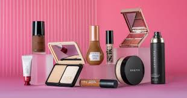

Cosmetics for girls include a wide range of products designed to enhance the appearance of the face, eyes, lips, and nails, as well as skincare products to prepare and protect the skin before and after makeup application. Cosmetics have become a lifestyle choice and a way to express personal style.
cosmetics
"Our website is organized into three essential sections: Beauty Products, Beauty Tips & Tutorials, and Brands & Reviews, offering you a complete guide to the world of cosmetics."
1. 🌸 Beauty Products 📏

Face Makeup: Foundation, concealer, powder, blush, highlighter, contour.
Eye Makeup: Mascara, eyeliner, eyeshadow, eyebrow products.
Lip Products: Lipstick, lip gloss, lip balm, lip liner.
Nail Products: Nail polish, nail care.
Skincare Essentials: Moisturizer, primer, sunscreen, makeup remover.
2.🌸 Beauty Tips & Tutorials
How to Choose the Right Products: Matching skin type and skin tone.
Makeup Tutorials: Step-by-step guides (text, images, or videos).
Trending Looks: (Natural look, party makeup, K-beauty, etc.)
Beginner's Guide: Building a starter kit, essential tools.
Skincare Tips: Pre-makeup skincare and post-makeup cleansing.
3. 🌸 Brands & Reviews
Top Cosmetic Brands: (Maybelline, Fenty Beauty, MAC, Glossier, etc.)
Product Reviews: Honest ratings and experiences.
What's Trending: New launches, limited editions.
Best for Budget: Affordable makeup options.
Luxury Picks: High-end beauty products.
Popular Cosmetic Brands
Six Elements of Makeup
Primer 🧴
Foundation 💄
Concealer ✨
Eyeshadow 👁️🎨
Mascara 👁️‍🗨️
Blush/Bronzer/Highlighter🌸💛
Six Elements of Skincare Routine
Cleansing 🧖‍♀️
Toning 💧
Exfoliating 🧴
Serum 💉
Moisturizing 🌿
Sunscreen 🌞
"Exploring the World of Girls' Cosmetics"
Skincare Routine 🌿
A skincare routine focuses on maintaining healthy and glowing skin through a series of steps.
It typically includes cleansing, toning, exfoliating, applying serums, moisturizing, and protecting the skin with sunscreen.
Each step helps to nourish the skin, remove impurities, and keep it hydrated.
Consistency is key to achieving a clear, radiant complexion, and selecting products that suit your skin type is essential for the best results.
Skincare 💆‍♀️ Focuses on maintaining healthy and glowing skin through cleansing, moisturizing, and protecting from sun damage.
Hair Care 💇‍♀️ Includes practices like shampooing, conditioning, and using treatments to keep hair healthy, shiny, and strong.
Importance of Skincare
✅ Helps to maintain a youthful appearance.
✅ Provides hydration and nourishment to the skin.
✅ Reduces the risk of skin conditions and acne.
✅ Protects from environmental damage like pollution and sun exposure.